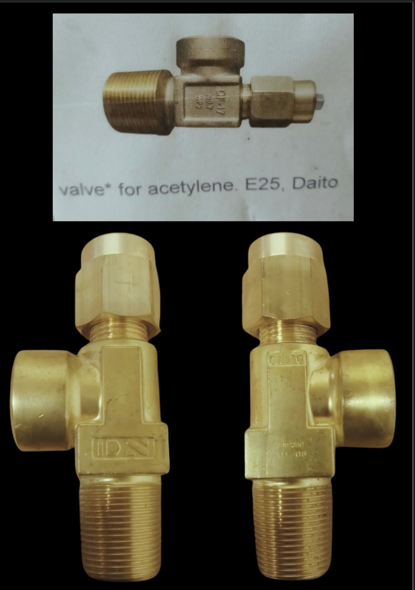
Daito Valve for Acetylene (E25)
Precision-engineered cylinder valve manufactured by Daito (Japan). High-tensile brass construction, specifically designed for acetylene cylinders.
- Inlet: 25E Tapered
- Gas: Acetylene
- Origin: Japan
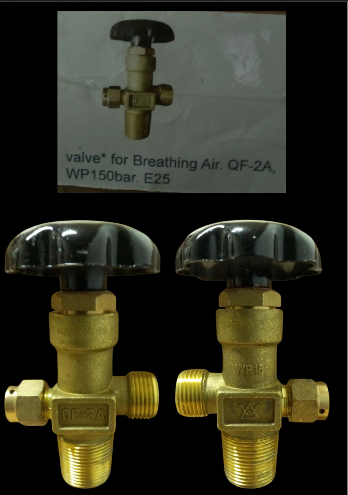
Valve for Breathing Air (QF-2A)
Standard industrial valve configured for Breathing Air applications. Suitable for SCBA and diving cylinders with a working pressure of 150 Bar.
- Model: QF-2A
- Pressure: 150 Bar
- Thread: E25
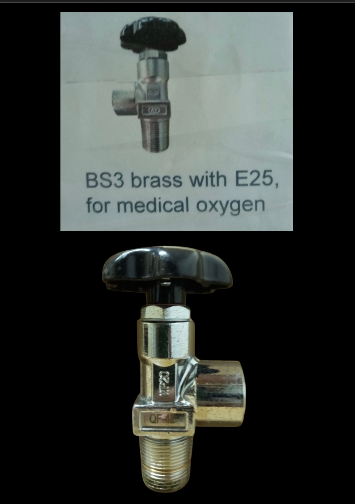
BS3 Brass Valve for Medical Oxygen
Standard Bullnose valve (BS 341 No. 3) for medical oxygen cylinders. Manufactured from high-quality brass for safety and reliability.
- Standard: BS 341 No. 3
- Gas: Medical Oxygen
- Operation: Key/Handwheel
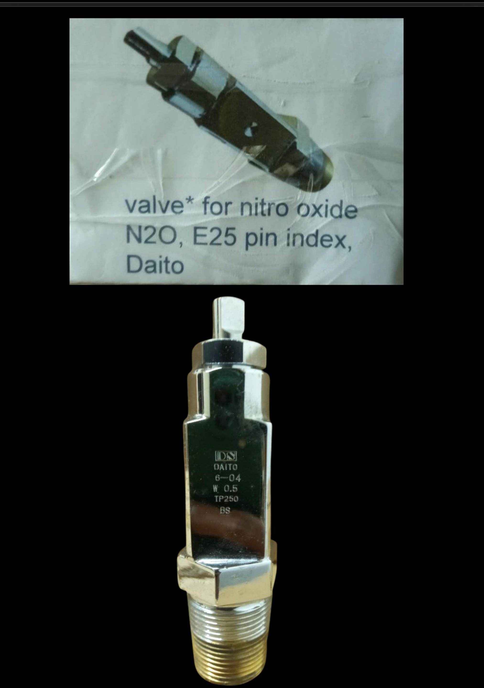
Daito Pin Index Valve (N2O)
Medical gas valve featuring the Pin Index Safety System (PISS) for Nitrous Oxide. Prevents incorrect gas connection.
- System: Pin Index
- Gas: Nitrous Oxide (N2O)
- Inlet: E25
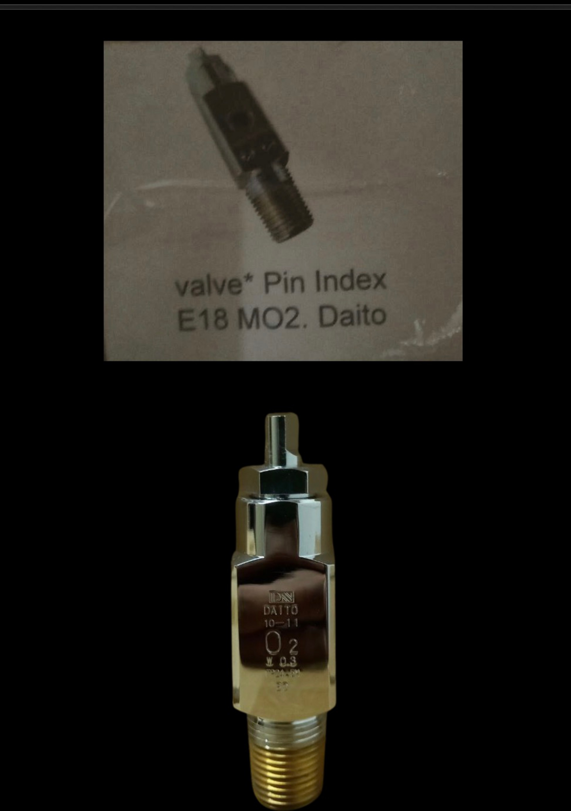
Daito Pin Index Valve (O2)
Medical oxygen valve with Pin Index Safety System. Designed for small medical cylinders (E-size, etc.).
- System: Pin Index
- Gas: Oxygen (MO2)
- Inlet: E18 / E25
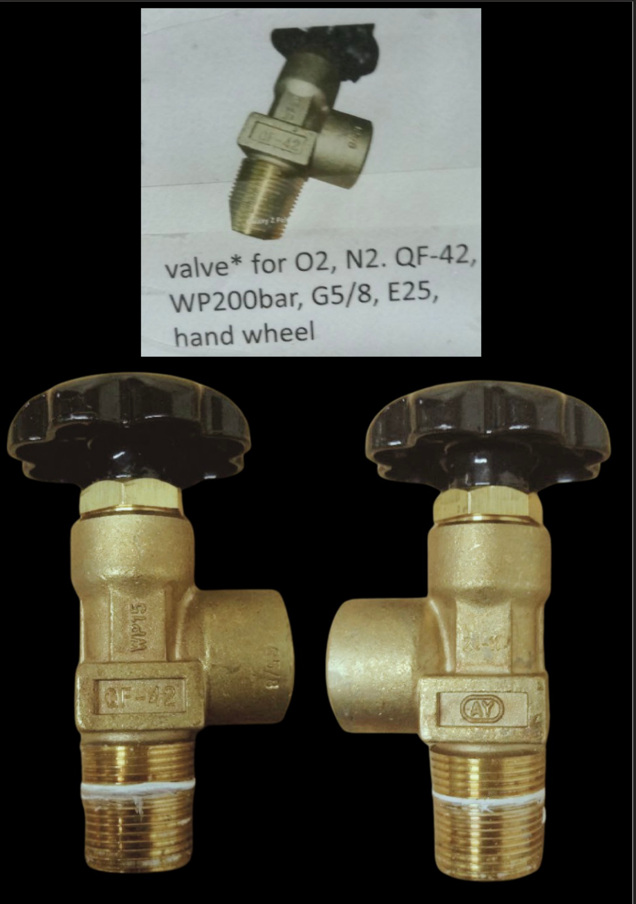
Valve for O2/N2 (QF-42)
Robust cylinder valve with handwheel operation. Suitable for Oxygen and Nitrogen cylinders up to 200 Bar working pressure.
- Model: QF-42
- Pressure: 200 Bar
- Outlet: G 5/8"
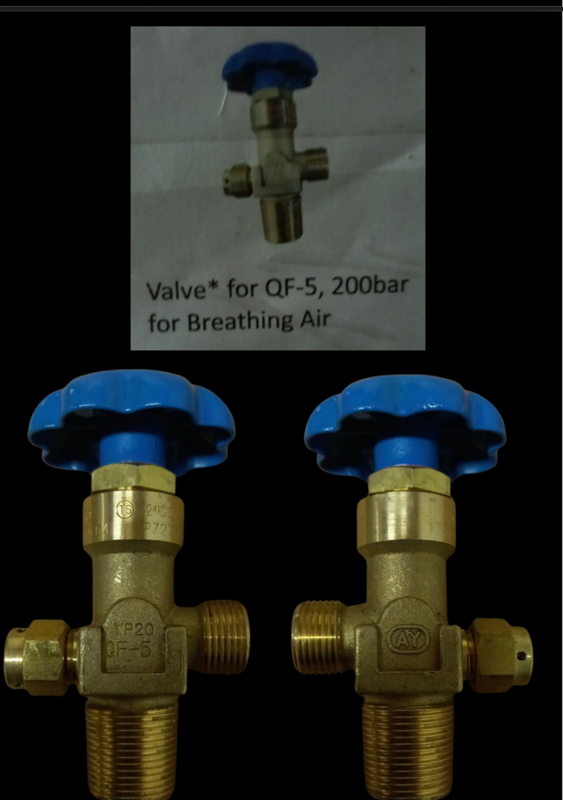
Valve for Breathing Air (QF-5)
High-pressure valve for breathing air cylinders. Rated for 200 Bar service pressure.
- Model: QF-5
- Pressure: 200 Bar
- Application: Breathing Air
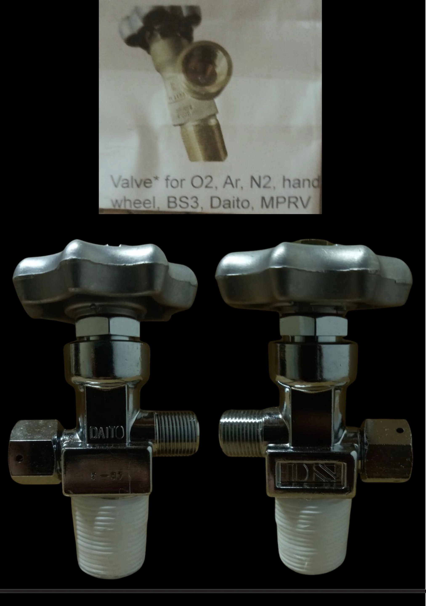
Daito Valve BS3 (O2/Ar/N2)
Japanese Daito valve with MPRV (Minimum Pressure Retention Valve) feature. Fits standard industrial outlets for Oxygen, Argon, and Nitrogen.
- Standard: BS 341 No. 3
- Feature: Residual Pressure Valve
- Origin: Japan
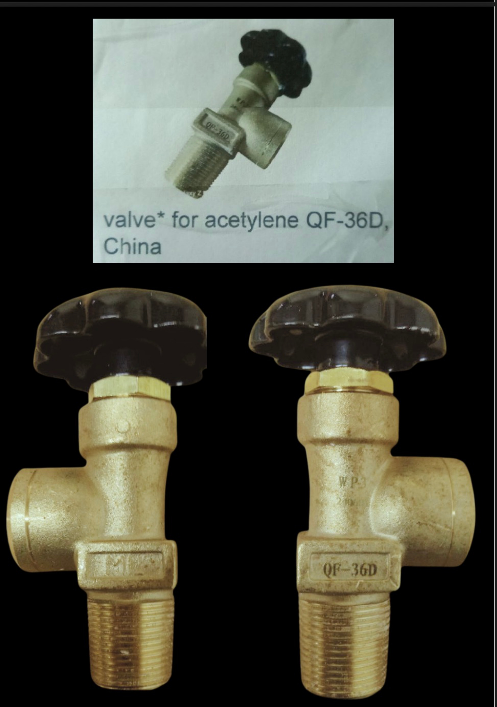
Valve for Acetylene (QF-36D)
Standard acetylene cylinder valve. Designed without copper-rich alloys to prevent explosive reactions.
- Model: QF-36D
- Gas: Acetylene
- Origin: China
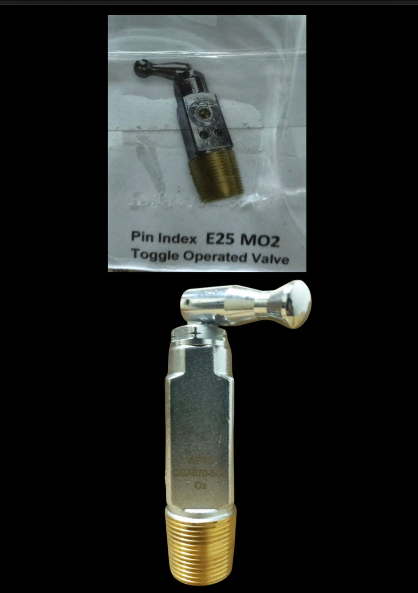
Pin Index Toggle Valve
Medical oxygen valve with toggle-style operation for quick opening and closing. Pin Index safety configuration.
- Operation: Toggle
- Gas: Medical Oxygen
- Inlet: E25
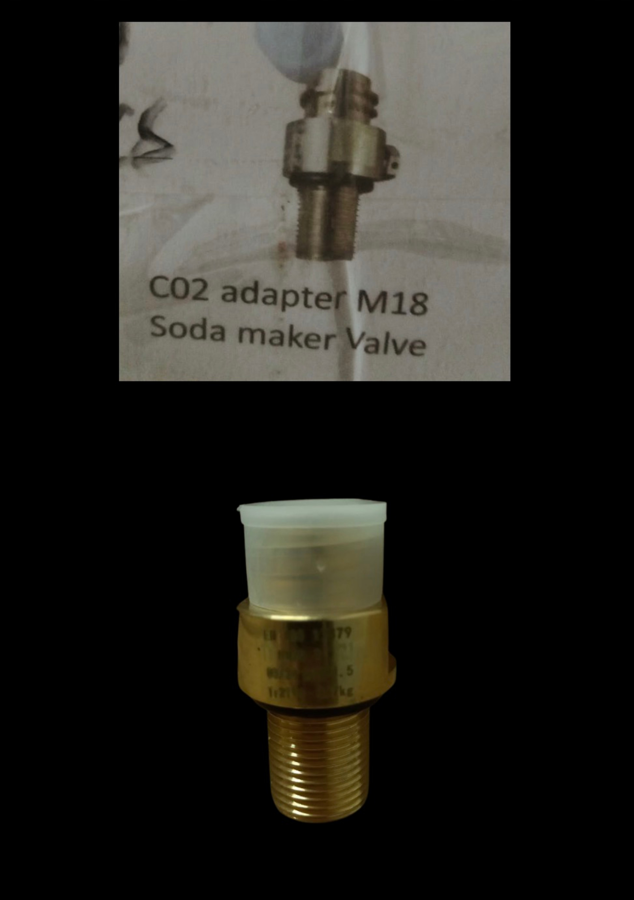
CO2 Adapter/Soda Maker Valve
Specialty valve for carbonating cylinders and soda maker applications.
- Application: Beverage/Soda
- Gas: CO2
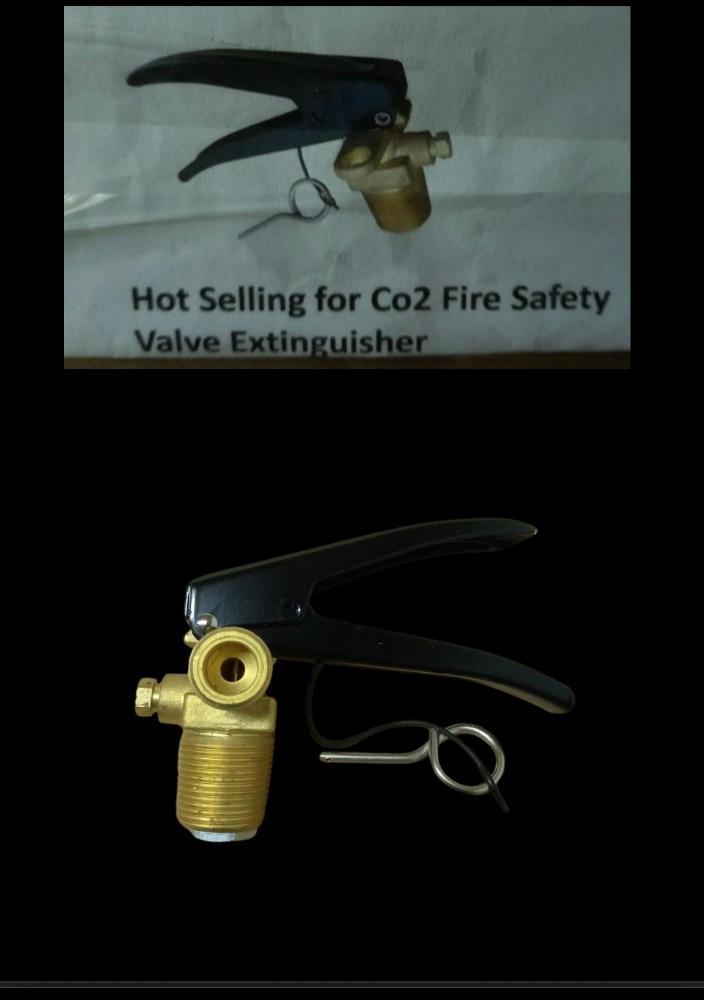
CO2 Fire Extinguisher Valve
High-flow discharge valve designed for CO2 fire extinguishers. Includes safety burst disc.
- Application: Fire Safety
- Gas: CO2
- Type: Squeeze Grip
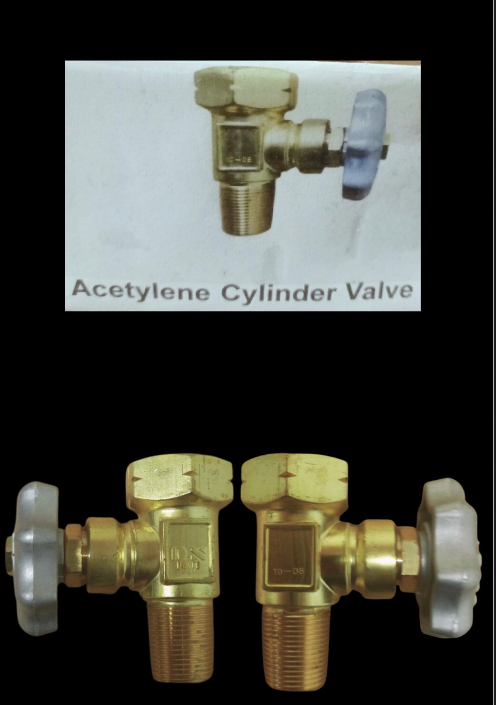
Standard Acetylene Valve
Replacement valve for acetylene cylinders. Meets standard safety requirements.
Request Quote